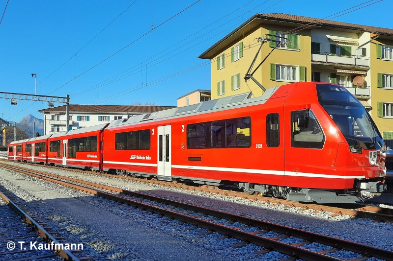
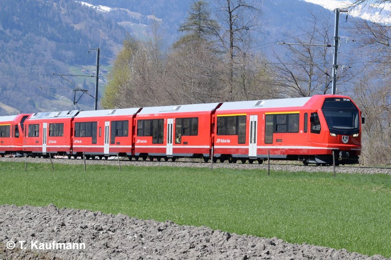

Allgemein
| Baujahr | 2019 - 2024 |
| Einsatz | StN |
| Antriebstechnik | Umrichtersteuerung |
| Leistung | StN: 2176 PS / 1600 kW |
| Ergänzungsbremse | elektrische Rekuperation |
Technische Daten
| Geschwindigkeit | 120 km/h |
| Länge | 76.43 m |
| Gewicht (Tara / Brutto) | 119 t / 146 t |
| Bremsgewicht | 129 t bis max. 157 t (automatische Lastabbremsung) |
| Magnetschienenbremse | ja, nicht anrechenbar |
| Feststellbremse | Fsp 132 kN |
Fahrzeugausrüstung
| Zug- / Stossvorrichtung | Automatische Kupplung (Faiveley-Schwab) |
| Vielfachsteuerung | CAN-Bus mit Powerline Modul |
| Zugbeeinflussung | ZSI 127 |
| Heizleitung | Keine |
| Speiseluft-Leitung | in automatischer Kupplung |
| Bremssystem | Druckluft-Hauptleitung |
| Türen | aussenbündig, elektrisch |
| Notfalleinrichtung | NBA / NBÜ |
Fahrgastausstattung
| Plätze 1. Klasse | 35 |
| Plätze 2. Klasse | 129 |
| Klappsitze | 18 |
| Niederflureinstiege | 3 |
| Rollstuhlplätze | 2 (bis max. 6 Rollstühle) |
| WC-System | 1x geschlossen, rollstuhltauglich 1x geschlossen |
| Velohaken | 12 |
| Fahrgastinfosystem | KIS |
| Zugzielanzeigen | innen und aussen |
| Fahrgastzählung | AFZ - Master |
| Videoüberwachung | ja |
| Videokamera Front | ja |